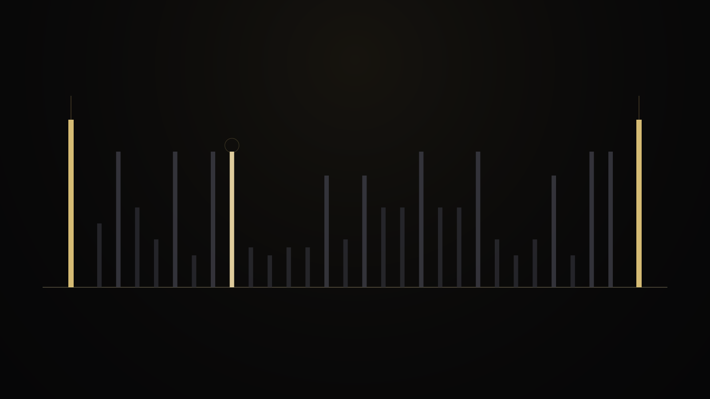
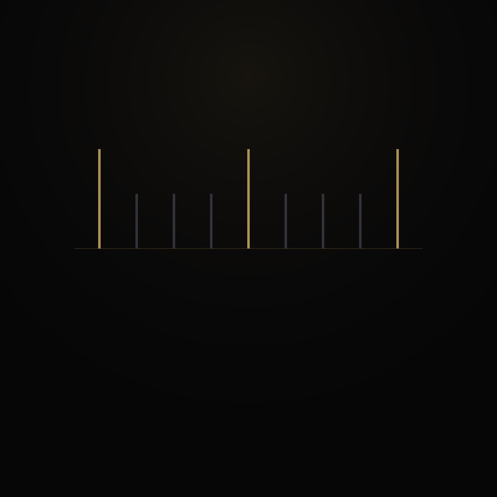
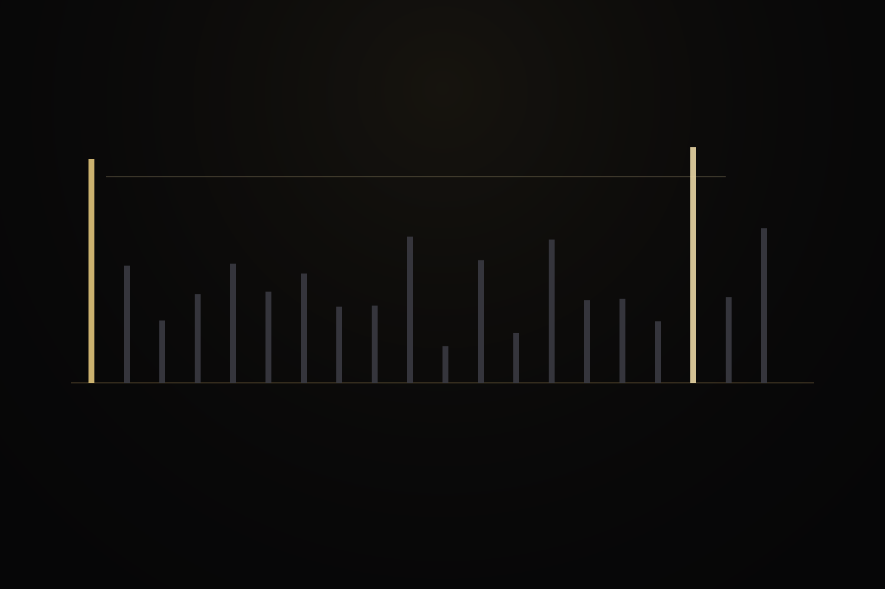

04 · Generator
Known prime in.
Next prime out.
The Minimal PGS Generator turns the gap story into a production contract: given a known prime, emit the successor prime as a minimal record.


{"p": 89, "q": 97}
That record says only what matters. No confidence fields. No source labels inside the stream.
A different question than “is this prime?”
The generator asks where the interval after a known prime closes.




| Surface | Result | Status |
|---|---|---|
11 .. 1,000,000 | 78494 / 78494 · 0 unresolved · 0 audit failures | Measured |
10^8 through 10^18 | 2816 / 2816 · 0 unresolved · 0 audit failures | Measured |
11 .. 100,000 | 9588 / 9588 exact outputs · 0 failures | Measured |